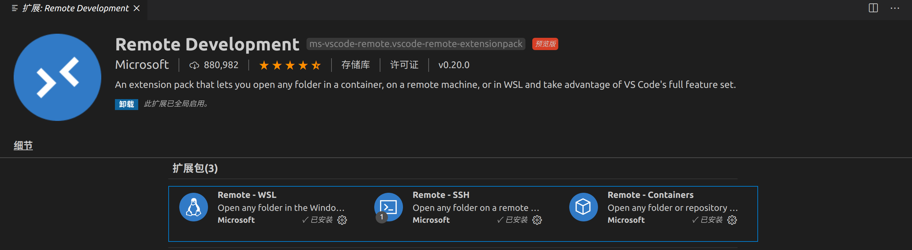
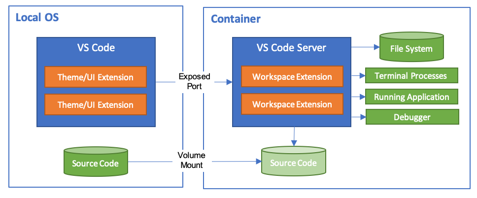

2.8.1. markdown
2.8.1.1. 简介
2.8.1.2. 基础
2.8.1.3. Typora 待完善
Typora 是一款功能全面、简洁高效，而且又非常优雅的 Markdown 编辑器。它把源码编辑和效果预览合二为一，在输入标记之后随即生成预览效果，提供了“所见即所得 ”的 Markdown 写作体验。
2.8.1.3.1. 简介
Typora是目前最受欢迎的Markdown编辑器之一。它的主要特性如下。
实时预览：传统的Markdown编辑器都有两个窗口，左边是源码，右边是渲染后的效果。Typora独辟蹊径，把源码编辑和效果预览合二为一，实现了真正的所见即所得。
扩展语法：Typora不光支持GFM，还扩展了数学公式、流程图等功能。
快捷操作：Typora对几乎所有的Markdown标记都提供了快捷操作方式，使用起来非常高效。
界面漂亮：默认支持6种主题，可自定义，好看又好用。
文件转换：支持多种文件格式通过导入/导出功能跟.md格式相互转换。
支持中文：支持中文，可以帮助大家更好地理解各项功能。
视图模式：支持大纲和文档列表视图，方便在不同段落和不同文件之间进行切换。
跨平台：支持macOS、Windows和Linux系统。
目前免费：这么好用的编辑器竟然是免费的。
快速开始
- 下载安装
下载地址：https://typora.io/#download。
- 设置语言
在默认情况下，Typora会使用操作系统的语言，如果想要自定义语言，可以在Typora编辑器上执行如下操作：【偏好设置】→【通用】→【语言】，选择语言后，重启Typora即可生效。
- 实时预览
Typora 编辑器最具特色的功能是实时预览，当输入 Markdown 标记后，按回车键或把光标定位到别的段落就能够看到预览效果。
安装Pandoc
Pandoc 是一个标记语言转换工具，可实现不同标记语言间的格式转换。
Typora 的文件导入/导出功能是使用 Pandoc 把 Markdown 文件转换成不同格式的文件，所以如果想使用文件导入/导出功能，必须要先安装 Pandoc。
如果不安装 Pandoc，Typora 只支持导出 HTML 和 PDF 格式的文件。
如果安装了 Pandoc，Typora 支持的文件格式如下。
· 导入文件格式。
如.docx、.latex、.tex、.ltx，.rst、.rest、.org、.wiki、.dokuwiki、.textile、.opml、.epub等。
· 导出文件格式。
如HTML、PDF、Word、OpenOffice、RTF、ePub、LA TEX、MediaWiki、PNG等。
Pandoc的安装步骤如下。
打开 https://github.com/jgm/pandoc/releases/latest，下载最新的安装包（注意要对应本机的操作系统），双击后按照提示一步一步安装即可。
macOS 用户还可以使用 home-brew 进行安装。
sudo brew install pandoc
高效地使用Markdown
Typora 支持 GFM，还扩展了很多其他的功能（如支持数学公式、上标、下标、高亮、各种图表等），它几乎为每一种标记都提供了快捷的操作方式，并且通过最佳实践规避了一些令人困惑的操作，这使我们的写作变得更加轻松。
基础语法和GFM语法
- 编辑样式
在 Typora 中通过执行：菜单栏→【格式】→【加粗/斜体/代码（行内代码）/图像/超链接】可以添加或移除关于文字样式 的标记符号。如果没有选中文字，则只会添加标记符号；如果选中了文字，则会为选中的文字添加或移除标记符号。
相关样式的快捷键如下。
2.8.1.4. VS Code
Visual Studio Code（简称 VS Code）是微软推出的一款开源的代码编辑器。它跨平台，同时支持Windows、macOS 和 Linux操作系统；它功能丰富，内置了 Git 版本控制系统，支持智能感知、自定义代码片段、格式化、命令面板等功能；最重要的是它有一个非常活跃的插件市场，上面有很多强大的插件供我们扩展 VS Code 的各项功能。
官网下载地址 https://code.visualstudio.com/ 按照提示进行安装即可
2.8.1.4.1. 基础设置
中文插件
安装
- Ctrl+Shift+X 快捷键 或者File-Preferences-Extensions 进入插件市场
- 输入 chinese
- 点击Install 安装
- 重启软体生效
切换语言
- 通过 View-Command Palette...或者快捷键Ctrl+Shift+P进入命令操作界面
- 在命令面板中输入 Configure Display Language
- 在列出的语言列表进行切换，重启生效
快捷键插件
之前用熟练别的编辑器可能对其快捷键很熟悉了，通过安装相关插件可以继续使用这些快捷键。
常用的快键键插件如下。
- IntelliJ IDEA Key Bindings for Visual Studio Code
- Sublime Text Keymap and Settings Importer
- Visual Studio Keymap
- Atom Keymap
- Vi m
- Notepad++keymap
- Eclipse Keymap
插件推荐
- Setting Sync: 使用 Github Gist 服务同步你的扩展配置的工具，更换设备再也不用一个一个的安装扩展了；
- Dracula Official： 吸血鬼主题，之前一直喜欢 One Dark 风格的主题，最近开始觉得本主题才更舒服；
- Vim: 如果你和我一样是 Vim 用户的话，这款扩展一定同样必不可少；
- GitLens: Git 用户必备，我一直认为这款插件带来的体验超越了 JetBrains 系列产品，这也是我逐步将 VS Code 作为主力 IDE 的原因之一，作为补充，可以再安装一个 Git History，颜值控必备；
- indent-rainbow：用颜色填充缩进，非常直观，如果有缩进错误还会变成红色，在 WebStorm 上暂时没有此扩展的替代品；
- Bracket Pair Colorizer： 为括号对进行着色，既美观也实用；
- Highlight Matching Tag： 点击某 Tag 时对应的 Tag 下会有下划线标示，比较实用；
- ESLint： 如果不是上古时代过来的高手，lint 系列工具是必备的，必装；
- Prettier - Code formatter： 配合 ESLint 使用，统一美化项目代码，必装；
- EditorConfig for VS Code： 让 VS Code 也能认识 .editorconfig 文件，必装；
- Vetur： Vue 开发者必装，不装还能开发的话算你厉害；
- Debugger for Chrome： 调试工具，必装；
- Markdown All in One All you need to write Markdown
- Markdown Preview Enhanced 超级Markdown插件MPE
- Markdown Preview Mermaid Support: Mermaid 图表预览
- markdownlint 语法检查
禁用/启用插件
进入插件管理界面会看到：搜索框、【已启用】、【推荐】、【已禁用】。
默认已安装的插件处于启用状态。如果想卸载或禁用某个插件，可以在【已启用】列表中查找，然后在详情页中选择禁用或卸载插件。禁用的插件会在重启后停用，可在【已禁用】列表中查看和重新启用这些插件。
2.8.1.4.2. 使用小技巧
增强预览
默认的预览功能比较简单，很多语法都不支持，有些语法渲染的效果也不是很好，这时我们需要安装一个增强预览插件——Markdown Preview Enhanced插件来增强预览功能。
安装完成后，在源码编辑界面，单击鼠标右键，在弹出的操作选项中单击【Markdown Preview Enhanced:Open Preview】，打开增强预览界面。
小提示： 如果想显示文件的目录，可以在预览界面按Esc键。
超级Markdown插件MPE
Markdown Preview Enhanced（以下简称MPE）是一款超级强大的Markdown插件，官方文档这样形容它——让你拥有飘逸的Markdown写作体验。
这么厉害的插件到底有什么功能呢?
可以这样说，Typora支持的所有Markdown语法，包括GFM、数学公式、图表、目录等，MPE基本都支持。如果你已经很熟悉Typora的使用，那么使用MPE也会很轻松。除此之外，MPE还支持引用文件和制作幻灯片，这两个功能绝对会让你眼前一亮。
接下来我们将对几个关键功能进行详细介绍。
1.插入目录
插入目录有两种方法。
方法1：直接在文件中输入[TOC]然后按回车键，这种方式比较通用，在Typora中也可以正常渲染。
方法2：调出命令行面板，输入[TOC]，在联想出来的命令列表中单击[Markdown Preview Enhanced:Create TOC]，保存后可正常渲染目录。
小提示： 在目录生成后，如果文中内容有更改，保存后，目录也会自动更新。
2.引用文件
MPE可以非常方便地引用外部文件，它支持引用.md、.csv、.jpg、.png、.gif、.html、.pdf 等格式的文件。其引用格式如下。
@import "文件名"
或者
<!-- @import "文件名" -->
2.1 引用 Markdown文件
@ import "README.md"
也可以引用一个在线文件
@import "网址"
2.2 引用 图片 MPE可引用的图片格式包括：.jpg、.gif、.png、.apng、.svg、.bmp。 可以直接引用图片
@ import "图片.jpg"
引用的同时可以设置大小
@ import "图片.jpg" {width="200px" height="150px" title ="图片" alt="一张图片"}
2.3 引用 csv文件
被引用的csv文件会直接解析成表格。
3.幻灯片
3.1创建幻灯片
MPE使用reveal.js来渲染幻灯片，这比直接使用reveal.js来创建幻灯片更加简单便捷。
幻灯片通过 来分页，例如
<!-- slide -->
#第一页
这是第一张幻灯片
<!-- slide -->
#第一页
这是第二张幻灯片
幻灯片会随着光标进行切换，如果你感觉在编辑器中查看不方便，也可以通过浏览器查看。具体方法是在预览界面单击鼠标右键，选择【Open in Browser】，就可以了。
小提示： 不管是在编辑器中，还是在浏览器中，如果想要切换到幻灯片的预览界面，直接按Esc键就可以了。
3.2幻灯片主题
幻灯片默认使用白色主题，如果想切换主题可以这样设置，将如下代码放到Markdown文件的头部即可
---
presentation:
theme: solarized.css
---
- beige.css
- black.css
- blood.css
- league.css
- moon.css
- night.css
- serif.css
- simple.css
- sky.css
- solarized.css
- white.css
- none.css
- white.css（默认）
小提示： reveal.js提供的配置选项都可以在MPE中非常方便地进行配置，想了解更多配置选项可参考官方文档。
4.导出文件
4.1导出HTML文件
在MPE中，把Markdown格式的文件导出为HTML文件非常简单，只需在预览界面上，单击鼠标右键，选择【HTML】→【HTML(offline)】即可，HTML文件会被导出到与当前Markdown文件同级的目录中。
可是在默认情况下，当Markdown文件有改动时，HTML文件并不会同步更新，如果想做到这一点，需要在Markdown文件头部加上如下代码。
---
export_on_save:
html : true
---
此后，如果这个Markdown文件有改动，只要进行保存，就会自动导出最新的HTML文件。
4.2导出PDF文件（Puppeteer）
通过工具（Puppeteer）导出PDF文件，需要先安装Puppeteer，在命令行执行如下命令。
npm install -g puppeteer
安装完成后，只需在预览界面上单击鼠标右键，选择【Chrome (Puppeteer)】→【PDF】即可，PDF文件会被导出到当前目录中，而且会被自动打开。
小提示： 导出PNG和JPEG格式的图片也是使用Puppeteer，步骤同上
4.3导出PDF文件（Prince）
使用Prince导出的PDF文件会自动生成目录，也支持自动导出功能。
安装方法请参考https://www.princexml.com/doc-install/
安装完成后，只需在预览界面上，单击鼠标右键，选择【PDF(prince)】即可，PDF文件会被导出到当前目录中，而且会被自动打开。
如果我们想在修改Markdown文件之后，自动导出最新的PDF文件，只需在Markdown文件头部加上如下代码。
---
export_on_save:
prince : true
---
此后，在每次修改完Markdown文件之后，只要进行保存，就会自动导出最新的PDF文件。
2.8.1.4.3. 高效编辑
命令面板
命令面板提供了几乎所有功能的快速访问路径，在命令面板中我们可以进行快速打开文件、运行命令、管理和安装扩展、运行任务、打开视图、行跳转、符号跳转等操作。
使用快捷键 Ctrl+P
注意： 现在输入框中是没有任何符号的，因此默认会列出最近打开过的文件，我们可以在这里快速打开之前打开过的文件。
在命令面板的输入框中输入 [?]可以查看命令面板的操作帮助，输入不同的符号，能够切换到不同的操作面板，达到快速操作的目的。
1.运行命令
在输入框中输入[>]，会切换到运行命令界面，输入命令关键字会列出所有可运行的命令，单击即可运行。
运行命令应该是我们最常用的操作了，因此VS Code提供了快捷键以快速进入命令操作界面，Ctrl+Shift+P
2.行跳转
命令面板的输入框中输入[:+行号]，并按回车键会行跳转到指定的行，被指定的行会高亮显示。
折叠内容
通常，编辑器都有一个非常好用的功能，那就是可以折叠内容结构，这使内容结构更清晰，也更容易阅读。令人惊喜的是，VS Code竟然支持Markdown源码的折叠，当遇到代码块、嵌套列表（有序列表/无序列表/任务列表）时，在编辑器中就会显示折叠图标，单击该图标即可把内容折叠。最棒的是VS Code还支持标题的折叠。具体如下图所示。
自动保存
很多人都有过忘记保存文件，导致辛苦了半天的工作付诸东流的惨痛经历。VS Code提供了自动保存的功能，它有3种保存策略可供选择。
1）afterDelay：当文件修改超过一定的时间（默认是1000ms）时自动保存。
2）onFocusChange：当编辑器失去焦点时自动保存更新后的文件。
3）onWindowChange：当窗口失去焦点时自动保存更新后的文件。
VS Code默认使用的是第1种策略，执行：菜单栏→【文件】→【自动保存】，开启自动保存，此后，当文件修改超过1000ms时就会自动保存。
如果想修改延迟时间，可以单击活动栏下面的【管理】图标→【设置】→在搜索设置输入框中输入[自动保存]
在【Files:Auto Save】中可以修改自动保存策略，在【Files：Auto Save Delay】中可以修改延迟保存时间。
智能感知
我们在前面提到过VS Code的智能感知功能，这绝对又是一个神技。通过智能感知可以进行自动补全，可以快速插入Markdown语法和自定义的代码片段。触发智能感知的快捷键是
Ctrl + 空格
注意： 在Windows系统下快捷键“Ctrl+空格键”可能会跟输入法的快捷键相冲突，可通过修改快捷键解决。
操作步骤：【管理】→【键盘快捷方式】→在搜索框输入[Trigger Suggest]（触发建议）→修改快捷键。
注意： 关于快速插入代码片段的示例，我们后面再讲。如果想使用更多快捷键和自动补全的功能，需要安装一个扩展插件——Markdown All in One。
Markdown All in One
Markdown All in One（以下简称MAO）提供了常用的Markdown快捷键和自动补全功能。其快捷键如下所示
| 操作 | Key | Command |
|---|---|---|
| 加粗 | Ctrl/Cmd + B | Toggle bold |
| 斜体 | Ctrl/Cmd + I | Toggle italic |
| 提升标题级别 | Ctrl/Cmd + Shift + ] | Toggle heading (uplevel) |
| 降低标题级别 | Ctrl/Cmd + Shift + [ | Toggle heading (downlevel) |
| 插入数学公式 | Ctrl/Cmd + M | Toggle math environment |
| 选中/取消选中任务列表项 | Alt + C | Check/Uncheck task list item |
| 切换预览 | Ctrl/Cmd + Shift + V | Toggle preview |
| 将预览切换到一边 | Ctrl/Cmd + K V | Toggle preview to side |
自动不全请去扩展插件官网观看或者自己体验 https://marketplace.visualstudio.com/items?itemName=yzhang.markdown-all-in-one
自定义代码片段
在VS Code中，可以自定义常用的代码片段，通过触发智能感知，实现一键插入。方法是打开自定义Markdown代码片段的文件，执行：【管理（左下小齿轮）】→【用户代码片段】→在弹出的面板中选择新建代码片段。
语法检查
markdownlint是用来检查Markdown写作规范的。
安装markdownlint以后，它会自动对Markdown文件进行检查，并在VS Code底部面板中列出检查出来的问题。问题标签上会显示检查出来的问题数量，列表中的问题会根据编辑器中已打开的文件名进行分类，单击具体问题会跳转到编辑器中对应的位置，在位置的上面会显示一个小灯泡图标，单击小灯泡会显示解决问题的提示，如下图所示。
拼写检查
Code Spell Checker插件能够帮助我们检查常见的拼写错误，也是必备的插件之一
版本管理
VS Code内置了Git版本管理系统，但功能比较简单，在此推荐3个功能增强插件。
1）GitLens：增强了VS Code内置的Git功能。
2）Git History：增强了Git提交历史的功能。
3）gitignore：可以帮助我们使用.gitignore文件。
由于Git相关的知识点较多，且比较专业，如果想深入了解，还是建议读者系统学习一下，了解Git相关的知识以后，关于这几个插件的使用也就不成问题了。
2.8.1.4.4. Remote Development 远程开发
Visual Studio Code Remote 允许开发者将容器，远程计算机，或 Windows Subsystem for Linux (WSL) 作为完整的开发环境。你可以：
- 在部署相同的操作系统上进行开发，或者使用更大或更专业的硬件。
- 把开发环境作为沙箱，以避免影响本地计算机配置。
- 让新手轻松上手，让每个人都保持一致的开发环境。
- 使用原本在本地环境不可用的工具或运行时，或者管理它们的多个版本。
- 在 WSL 里开发 Linux 应用。
- 从多台不同的计算机访问现有的开发环境。
- 调试在其他位置（比如客户网站或云端）运行的应用程序。
所有以上的功能，并不需要在你的本地开发环境有源代码。通过 VS Code Remote，轻松连接上远程环境，在本地进行开发。

从原理上讲，VSCode 远程开发扩展相当于把开发者自己机器上的 VSCode 原样拷贝到作为目标机器（Remote Host）上，以服务的形式运行，而本地的 VSCode 作为客户端，两者之间通过远程通讯协议彼此协调合作，实际上的开发工作主要是在服务端完成的。这个架构特别之处在于，我们日常所使用的扩展也被分成两个阵营：和界面定制相关的部分，主要包括样式、主题、图标等等在客户端运行；而与开发相关的大部分扩展则在服务端运行。后面在实际操作的部分，我们会看到界面上相应的变化。
Remote Development extension pack 扩展包
Remote Development extension pack 扩展包含三个扩展，官方说明 https://code.visualstudio.com/docs/remote/remote-overview
- Remote - SSH - 通过使用 SSH 打开远程计算机或者VM上的文件夹，来连接到任何位置。
- Remote - Containers – 把 Docker 作为你的开发容器。
- Remote - WSL - 在 Windows Subsystem for Linux 中，获得 Linux 般的开发体验。
安装
Ctrl+Shift+X 进入扩展商店 搜索 Remote Development 安装扩展包，三个扩展会一并安装

Remote - SSH

- 在比本地机器更大、更快或更专业的硬件上进行开发。
- 在不同的远程开发环境之间快速切换，安全地进行更新，而不必担心影响本地计算机。
- 调试在其他位置运行的应用程序，例如客户网站或云端。
配置 SSH
通过 SSH 连接到服务器是运维的常规操作，不再赘述。官方文档也有详细的步骤指导。
本地 [SSH Client] (https://code.visualstudio.com/docs/remote/troubleshooting#_installing-a-supported-ssh-client) 一般不用配置.
远程 SSH server linux 一般自带 openssh-server .
使用 SSH Key 的方式尽管初始配置要麻烦一些，但是一劳永逸.
注意： 对于Windows用户，生成的key通常位于%USERPROFILE%.ssh 目录下
连接到服务器
# 登陆的时候自动打开命令行窗口
通过命令面板（快捷键 Ctrl+Shift+P） 打开设置 Remote-SSH-Settings，设置Remote.SSH:Show Login Terminal为true
# SSH 连接
配置
插件后左下角会出现一个绿色的图标，点击选择会在命令窗口弹出几个选项
选择Remote-SSH：Connect to Host 可以手工输入例如 ssh hello@microsoft.com 一般不用，太麻烦。
选择Remote-SSH：Connect to Host->Open Configuration File->选择一个config
之后会出来配置config的信息，Host是自己给这份配置文件起的名字，HostName是远程主机的IP地址，User是登录名，Port是SSH端口默认是22， IdentityFile是SSH Keys
下面给出Linux 和 Windows的示例，图片是Linux环境下的
Host aws-5-sg
HostName 54.179.121.163
User admin
Port 2134
IdentityFile "/home/august/.ssh/id_rsa"
Windows 示例
Host aws-5-sg
HostName 54.179.121.163
User admin
Port 2134
IdentityFile "C:\Users\august\.ssh\id_rsa"
注意： 对于Windows用户，生成的key通常位于%USERPROFILE%.ssh 目录下
远程资源管理器 连接
输入完毕后保存，左侧 远程资源管理器 会出现配置好的信息，右键登陆即可。
第一次连接到远程服务器时的初始化工作需要消耗一段时间，以后再次打开就会快很多。请耐心等待服务器初始化完成，如果一切正常，你就会看到 VSCode 转变为远程开发模式。
# 管理扩展
再次打开扩展商店会发现变成了本地和远程两个部分。一些扩展只在本地，一些扩展会提示可以在远程安装，需要手动安装一下。安装完毕后本地会被禁用。
最终效果

Remote - Containers -待补充

- 您可以在部署的同一操作系统上，使用一致的工具链进行开发。
- 容器是隔离的，这意味着你可以在不影响本地计算机的情况下在不同的开发环境之间快速切换。
- 其他人可以轻松地为您的项目做出贡献，因为他们可以在一致的开发环境中轻松开发、构建和测试。
一个 devcontainer.json 文件可以被用来告诉 VS Code 如何配置开发容器，包括使用的 Dockerfile、端口映射以及在容器中安装哪些插件等等。
Remote - WSL 待补充
- 使用 Windows 在基于 Linux 的环境中进行开发，使用平台特定的工具链和程序。
- 编辑位于 WSL 中的文件或挂载的 Windows 文件系统（例如 /mnt/c）。
- 在 Windows 上运行和调试基于 Linux 的应用程序。
插件直接在 Linux 发行版中运行，因此你不需要担心路径问题、软件兼容性或其他跨平台的问题。你可以像在 Windows 中一样，在 WSL 中无缝地使用 VS Code。
2.8.1.4.5. 参考
https://zhuanlan.zhihu.com/p/64505333
https://marketplace.visualstudio.com/items?itemName=ms-vscode-remote.remote-ssh